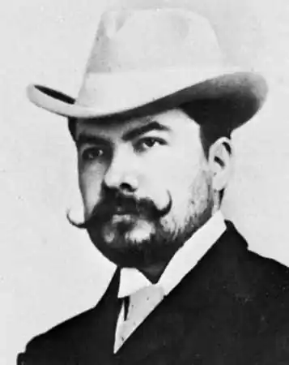
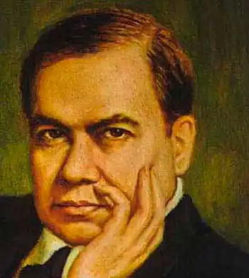

ДАРІО, Рубен (Dario, Ruben; автонім: Ґарсія-і-Сарм'єнто, Фелікс Рубен — 18.01. 1867, м. Метапа — 06.02.1916, м. Леон) — нікарагуанський поет.Даріо цілком слушно називають королем іспаномовної поезії, засновником модернізму в поезії Латинської Америки й Іспанії. Його вплив на подальший розвиток усього латиноамериканського поетичного материка був настільки значним, що відомий літературознавець П. Е. Уренья висловився про творчість Даріо таким чином: "Про будь-який поетичний твір, написаний іспанською мовою, можна безпомильно сказати, створений він до Даріо чи після нього".
Майбутній поет народився у невеликому селищі Сан Педро Метапа (тепер Сьюдад Даріо — "місто Даріо"). Через сімейні незгоди поміж матір'ю Розою Сарм'єнто та її чоловіком і водночас кузеном Мануелем Даріо його виховував хрещений батько — полковник Фелікс Рамірес із дружиною Бернардою. Ознаки геніальності проявились у Даріо ще у дитинстві. Хоча він не мав схильності до формальної освіти, проте навчився читати в три роки, віршувати почав у 8, авіз років його поезія під псевдонімом "Даріо" публікувалася у місцевій пресі.
Освіту Даріо здобував у єзуїтській школі, після чого певний час працював у Національній бібліотеці в Манагуа, де мав можливість ознайомитися з класичною та сучасною літературою. У 1881 р. юний поет отримав грант у 500 песо від президента Сальвадору — Залдівара на підтримку його таланту. З цієї нагоди Даріо у сан-сальвадорській гостиниці влаштував бучну пиятику з випадковими знайомими. У результаті гроші були розтринькані, а поета віддали у школу-інтернат. Тут Даріо не лише вивчив французьку мову, а й ґрунтовно ознайомився із поезією Франції. Після закінчення школи Даріо запросили у президентський палац з нагоди святкування ювілею С. Болівара. За прочитану "Оду Болівару" поета знову вшанували премією у 500 песо, якою він розпорядився майже так само, як і першого разу, але, щоправда, наступного ранку втік із країни. Рання творчість Даріо (збірки "Епістоли та вірші. Перші ноти" — "Epistolas у poemas. Primeras notas", 1885; "Рифи"— "Abrojos", 1887; "Рими" — "Rimas", 1887) пронизана духом романтизму. У багатьох аспектах вірші названих збірок мають яскраво виражений наслідувальний характер. У них прослідковується вплив Дж.Н.Г. Байрона, Г. Лонгфелло, В. Гюго та грецьких поетів. Слава прийшла до Даріо у 1888 році, коли в Чилі, де він тоді проживав, вийшла друком поетична збірка "Блакить" ("Azul"), в якій він небезуспішно спробував оновити поетичну мову. Важливість і новизну "Блакиті" відразу ж усвідомили як в Іспанії, так і в Латинській Америці. Даріо було визнано вождем латиноамериканського модернізму, а його збірку — початком поетичної революції. Рецензуючи "Блакить", Р. Ласо зазначав, що Даріо "створює нову поезію, яка, не будучи ні іспанською, ні французькою, є власне іспано-американською". Сам поет щодо власного стилю якось висловився таким чином:"...Писати так, щоби слово було не базіканням папуги, а мовчанням орла, пов'язати воєдино колір і світло, впіймати секрет музики у золоту пастку риторики, створити штучні троянди із запахом весни, — осьде істина". Метафора "блакить" для поета — знак ідеальної краси, яка протистоїть затхлій буденності: Спокій, спокій... І вже злотаве містоЗапричастилося вечірніх тайн.Собор як дароносиця велика.Блакитно хвилі в бухті мерехтять,Зливаючись, мов заголовні літериУ требниках чи на старих листах. Човни рибальські звідусіль спливлися,Вітрил трикутних білістю ряхтять,І мовби чується луна: "Уліссе!" —У ній гіркота солі й запах трав.("Vesper", пер. М.Литвинця).Нікарагуанський письменник Е. Карденаль, згадуючи Даріо, зауважував, що все його життя — це безперервні мандри. Він жив у Чилі й Аргентині, об'їхав усю Латинську Америку та США, багато разів бував у Європі, сім років проживав у Франції, спочатку як журналіст, а потім як консул Нікарагуа. У 1893 р. його призначили генеральним консулом Колумбії в Буенос-Айресі. Саме тут, в Аргентині, і вийшла друком збірка "Язичницькі псалми ", яка стала маніфестом модернізму. У ній поет звернувся до індіанського фольклору, плідно поєднавши його традиції із художніми здобутками французьких символістів. У цей самий час Даріо опублікував статтю "Кольори прапора", у якій проголосив творче кредо модерністів. "Я зневажаю життя та час, у якому мені судилося народитися", — заявив поет, створюючи у поезії другу реальність, протиставлену навколишньому світу. "Язичницькі псалми" ("Prosas Profanas", 1896) стали віховою збіркою у плані остаточного руйнування класицистично-романтичних шаблонів. Поетові вдалося глибоко розкрити складний і суперечливий світ почуттів сучасної йому людини, відтворити болісні пошуки інтелектуальної свідомості, уникнувши при цьому риторики чи патетики. Проте якщо у поетичній палітрі Даріо часу "Язичницьких псалмів" ще спостерігався досить значний елемент французького символізму, то збірка "Пісні життя та надії" ("Cantos de vida у esperanza", 1905) засвідчила цілковиту сформованість Даріо як поета. Її домінантами стали громадянська пристрасність і екзистенційна зануреність у внутрішнє "я". Не менш значні ліричні пласти, посилені глибокими філософськими медитаціями, прочитуються у наступних збірках Даріо: "Мандрівна пісня" ("El canto errante", 1907), "Осіння поема й інші вірші" ("El poema delotono", 1910), "Пісня Аргентині" ("Canto a la Argentina", 1910). Особисте життя Рубена Даріо було не менш "модерним", аніж його творчість. 21 червня 1890 р. поет одружився із місцевою новелісткою Рафаелою Контрерас у Сальвадорі. У період між офіційним і релігійним шлюбом у країні відбувся військовий переворот, тож молода пара змушена була втекти у Гватемалу, де вони й щасливо пошлюбувалися. Рафаела народила Даріо його першого сина, котрий, проте, незабаром помер. Справжнім і довготривалим коханням у житті поета стала Франціска Санчес, вродлива селянка, з якою він познайомився у 1899 р. в Іспанії. Даріо терпляче навчав її читанню та письму і навіть як готувати його улюблені нікарагуанські страви. Після розлучення з дружиною поет залишився з Франціскою до кінця життя. У них народилося троє дітей, двоє з яких померли у дитинстві. Даріо був одним із найбільших "богемників" Нікарагуа, що не могло не позначитися на його здоров'ї. Він помер 6 лютого 1916 р. в нікарагуанському містечку Леон. Незадовго до своєї смерті, перебуваючи у Нью-Йорку, вже важкохворий поет сказав: "Я їду шукати собі кладовище на рідній землі". "Геніальний самоук, хлопчина, імпровізатор віршів із глухого нікарагуанського села виявився першим латиноамериканцем, котрий досяг вершин світового Парнасу" (В. Столбов). "Великим спокусником" назвав його іспанський поет А. Мачадо, "приборкувачем слів" і "божественним індійцем" — величав іспанський філософ X. Ортега-і-Гассет. Українською мовою окремі вірші Даріо переклали Л. Первомайський, Д. Павличко, М. Литвинець, О. Мокровольський, Г. Кочур. Б. Щавурський